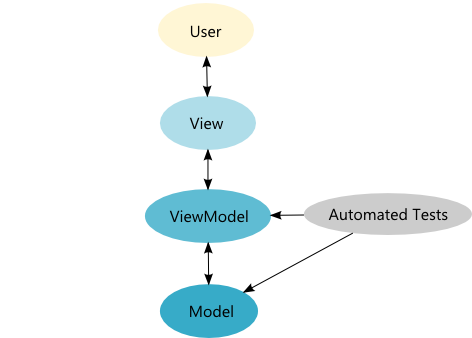
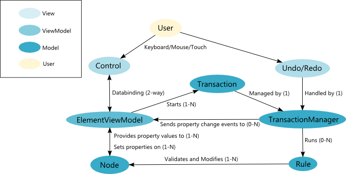
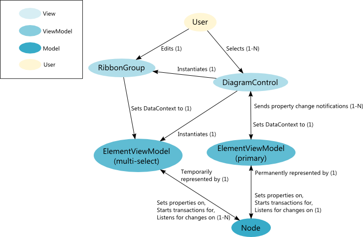

The Model-View-ViewModel Pattern
The Diagram SDK is designed around the Model-View-ViewModel (MVVM) architectural pattern, which comprises the following layers:
- Model—The object model, which represents the program's underlying data structures.
- View—The graphical user interface (GUI) elements of the program.
- ViewModel—An abstraction of the View that serves in data binding and passing commands between the View and the Model. This can be conceived as a specialized aspect of a Controller, as defined in the Model-View-Controller (MVC) pattern.
MVVM Architecture
The following diagram illustrates the basic structure of the MVVM architectural pattern.

The primary feature of the MVVM is a separation of concerns between the Model, View, and ViewModel, which yields substantial development benefits, including:
- A clean, modular architecture
- Simplified collaboration between backend developers and visual designers
- The ability to swap out user interface elements or entire Views/GUIs without modifying core algorithms or data structures
- Simplified automated testing due to de-coupling of Model and ViewModel logic from the user interface
- An abundance of MVVM examples, tutorials, and discussions within the .NET community
- A robust ElementViewModel class built into the Diagram SDK
MVVM Theory of Operation
The following diagram illustrates the high-level interaction flow of a typical Diagram SDK application using MVVM.

Using a standard input method such as a mouse, keyboard, stylus or touch, the end user interacts with View controls displayed within a Shell instance, which comprises the application's graphical user interface (GUI). The View controls, which ultimately derive from Control or UserControl, communicate with the ViewModel layer through databinding to ViewModel properties. The ViewModel layer interprets data from the View, performing any necessary data type conversions, and then passes the interpreted data to the Model layer by setting Model properties.
Similarly, ViewModels listen for updates from their associated Model Elements (e.g. [Nodes][NodeRef[, Structures, or Wires), interpreting the state of the Model layer and performing any necessary data conversions before passing the data to databound controls in the View layer by calling NotifyPropertyChanged, which fires a PropertyChanged Event.
MVVM Guidelines
Following these simple guidelines will help you get the most of your MVVM implementation:
- Keep the View layer as simple as possible
- Keep all your logic in the ViewModel and Model layers
- To facilitate automated testing of the Model and ViewModel layers, keep them free of View dependencies. The ViewModel layer can be aware of the View layer but should not depend on it.
Using the ElementViewModel Class
ElementViewModel is a ViewModel base class provided by the Diagram SDK. You can use this class directly or derive from it to add custom functinality.
Propogating Property Changes from the View Layer to the Model Layer
The ViewModel layer is responsible for propagating user-initiated property changes to the model layer and initiating Transactions so that the transaction system can ensure model validity, notify listeners of property changes, and track changes for persistence and undo/redo operations. However, to avoid an infinite cycle of property changes and notifications, your ViewModels should always check to ensure that a property change is fresh before setting the underlying model property, as shown in the following example.
public String MyProperty
{
get
{
return model.MyProperty;
}
set
{
if (model.MyProperty != value)
{
using (var myPropertyTransaction = TransactionManager.BeginTransaction("Change MyProperty", TransactionPurpose.User)
{
model.MyProperty = value;
myPropertyTransaction.Commit();
}
}
}
}
Propagating Property Changes from the Model Layer to the View Layer
The ViewModel layer is responsible for listening for change notifications from the transaction system and forwarding relevant model change notifications to the view layer. Your ElementViewModels should do this in the ViewElementPropertyChanged method. As shown in the following example, your ViewElementPropertyChanged method should contain an if statement that checks for the actual property names you care about to avoid sending out redundant notifications.
protected override void ViewElementPropertyChanged(object sender, string propertyName)
{
base.ViewElementPropertyChanged(sender, propertyName);
if (propertyName == "MyProperty1" || propertyName == "MyProperty2")
{
NotifyPropertyChanged(propertyName);
}
}
Delaying Notifications for Atomic Actions
The TransactionManager supports batching of user operations to allow certain visuals to avoid displaying intermediate updates during user modifications. This is accomplished by wrapping the property changes in an atomic action. You can use the ElementViewModel InUserModification property to detect when a property change has occurred during an atomic action and call the NotifyPropertyChangedOnActionComplete method to batch up property change notifications and delay sending them to the view. When the atomic action is complete, the ElementViewModel base class implementation of the UserModificationComplete method sends out these delayed notifications.
protected override void ViewElementPropertyChanged(object sender, string propertyName)
{
base.ViewElementPropertyChanged(sender, propertyName);
if (propertyName == "MyDelayableProperty")
{
if (InUserModification)
{
NotifyPropertyChangedOnActionComplete("MyDelayableProperty");
}
else
{
NotifyPropertyChanged("MyDelayableProperty");
}
}
}
Editing Multiple Elements Simultaneously
Constructing an ElementViewModel requires one or more Elements to be passed in as the models that the ViewModel will represent. A common example of the N-Element use case is a ribbon that changes properties on a group of selected Elements. The following example shows how to obtain references to a group of selected MyNodes and pass them to a MyViewModel class designed to represent one to N MyNodes.
The following diagram illustrates the relationships between the model, view, and ViewModel layers in the case of a RibbonGroup that supports multi-select editing of multiple Nodes.

Note that in this case, each of the selected Nodes is represented by two ViewModel instances. Each Node is represented by its own primary ViewModel instance, and the selected Nodes are jointly represented by a second, temporary ViewModel instance that only applies while the group of Nodes remains selected. When the Node type's view (DiagramControl) instantiates the RibbonGroup upon selection, it must instantiate an instance of the Node type's ViewModel and set the RibbonGroup's Datacontext to this shared ViewModel, as shown in the following example.
public override IEnumerable CreateRibbonContent(IEnumerable selection)
{
var ribbon = new List();
if (selection.Count() == 1)
{
ribbon.Add(new MyNodeRibbonGroup() { DataContext = ViewModel });
}
else
{
MyNodeViewModel groupViewModel = new MyNodeViewModel(selection.Select(t => t.Model).OfType());
ribbon.Add(new MyNodeRibbonGroup() { DataContext = groupViewModel });
}
return ribbon;
}
Adding Command Bindings
ElementViewModel provides the AddCommandBindings method, which you can override to add command bindings to any visual that needs to handle specific commands. Doing this within the ViewModel allows you to consolidate logic in one place and keep your visual code as simple as possible. Instead of creating handlers on the ribbon, the adorner, and the property pane visual, you just need code in the ViewModel.
public override void AddCommandBindings(UIElement element)
{
base.AddCommandBindings(element);
element.GetCommandBindings().Add(new CommandBinding(MyCommand1, MyCommand1ExecuteHandler, MyCommand1CanExecuteHandler));
element.GetCommandBindings().Add(new CommandBinding(MyCommand2, MyCommand2ExecuteHandler, MyCommand2CanExecuteHandler));
}